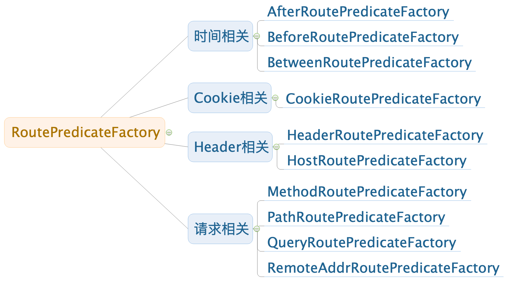

<!DOCTYPE HTML>
<html lang="zh-CN">
<head><meta name="generator" content="Hexo 3.8.0">
    <!--Setting-->
    <meta charset="UTF-8">
    <meta name="viewport" content="width=device-width, user-scalable=no, initial-scale=1.0, maximum-scale=1.0, minimum-scale=1.0">
    <meta http-equiv="X-UA-Compatible" content="IE=Edge,chrome=1">
    <meta http-equiv="Cache-Control" content="no-siteapp">
    <meta http-equiv="Cache-Control" content="no-transform">
    <meta http-equiv="pragma" content="no-cache">
    <meta http-equiv="Cache-Control" content="no-cache, must-revalidate">
    <meta http-equiv="expires" content="Mon Apr 06 2020 02:12:38 GMT+0800 (CST)">
    <meta name="renderer" content="webkit|ie-comp|ie-stand">
    <meta name="apple-mobile-web-app-capable" content="张万众的博客 - 关注Spring Cloud、Docker">
    <meta name="apple-mobile-web-app-status-bar-style" content="black">
    <meta name="format-detection" content="telephone=no,email=no,adress=no">
    <meta name="browsermode" content="application">
    <meta name="screen-orientation" content="portrait">
    <meta name="theme-version" content="1.2.3">
    <meta name="root" content="/">
    
    <!--SEO-->

    <meta name="keywords" content="Spring Cloud,Spring Cloud Gateway">


    <meta name="description" content="
TIPS
本文基于Spring Cloud Greenwich SR2编写，兼容Spring Cloud Finchley及更高版本。

这一节来详细探讨Spring Cloud Gateway的路由谓词工厂 （Route Predicate Factories），路由谓词工厂的作用是：符合...">


<meta name="robots" content="all">
<meta name="google" content="all">
<meta name="googlebot" content="all">
<meta name="verify" content="all">
    <!--Title-->


<title>Spring Cloud Gateway-路由谓词工厂详解（Route Predicate Factories） | 张万众的博客 - 关注Spring Cloud、Docker</title>


    <link rel="alternate" href="../../atom.html" title="张万众的博客 - 关注Spring Cloud、Docker" type="application/atom+xml">


    

    


<link rel="stylesheet" href="../../static/css/bootstrap.min-271a649e0635d6fa1b.css">
<link rel="stylesheet" href="../../static/css/font-awesome.min-ac2bebcf7fb5b26.css">
<link rel="stylesheet" href="../../static/css/style-6f3c140f6eee20e6591da00ec0.css">


    


    <script>
        var _hmt = _hmt || [];
        (function() {
            var hm = document.createElement("script");
            hm.src = "https://hm.baidu.com/hm.js?13766878cde148282622871dd245a973";
            var s = document.getElementsByTagName("script")[0];
            s.parentNode.insertBefore(hm, s);
        })();
    </script>


    

</head>

</html>
<!--[if lte IE 8]>
<style>
    html{ font-size: 1em }
</style>
<![endif]-->
<!--[if lte IE 9]>
<div style="ie">你使用的浏览器版本过低，为了你更好的阅读体验，请更新浏览器的版本或者使用其他现代浏览器，比如Chrome、Firefox、Safari等。</div>
<![endif]-->

<body>
    
    <nav class="main-navigation">
    <div class="container">
        <div class="row clearfix">
            <div class="col-md-12 column">
                <nav class="navbar navbar-default" style="background-color:#fff;border:0;margin-bottom:0" role="navigation">
                    <div class="navbar-header">
                        <button type="button" class="navbar-toggle" data-toggle="collapse" data-target="#navbar-collapse-1">
                            <span class="sr-only">切</span>
                            <span class="icon-bar"></span>
                            <span class="icon-bar"></span>
                            <span class="icon-bar"></span>
                        </button>
                        <a class="logo" href="../../index.html">
                            张万众的博客
                        </a>
                    </div>

                    <div class="collapse navbar-collapse" style="border:0;" id="navbar-collapse-1">
                        <ul class="nav navbar-nav">
                            
                                
                                    <li>
                                        <a href="../../about.html" target="_blank">
                                            <i class="fa fa-user"></i>
                                            关于我
                                        </a>
                                    </li>
                                
                            
                                
                                    <li>
                                        <a href="../../archives.html" target="_blank">
                                            <i class="fa fa-archive"></i>
                                            归档
                                        </a>
                                    </li>
                                
                            
                                
                                    <li class="dropdown">
                                        <a href="#" class="dropdown-toggle" data-toggle="dropdown" data-hover="dropdown">
                                            <i class="fa fa-fire"></i>
                                            系列课程
                                            <strong class="caret"></strong>
                                        </a>
                                        <ul class="dropdown-menu">
                                            
                                                <li>
                                                    <a href="../../docker/00-docker-lession-index.html" target="_blank">
                                                        <i class="fa "></i>
                                                        Docker系列教程
                                                    </a>
                                                </li>
                                            
                                                <li>
                                                    <a href="../../spring-cloud/spring-cloud-index.html" target="_blank">
                                                        <i class="fa "></i>
                                                        Spring Cloud系列教程
                                                    </a>
                                                </li>
                                            
                                                <li>
                                                    <a href="../../spring-boot/spring-boot-index.html" target="_blank">
                                                        <i class="fa "></i>
                                                        Spring Boot系列教程
                                                    </a>
                                                </li>
                                            
                                        </ul>
                                    </li>
                                
                            
                                
                                    <li class="dropdown">
                                        <a href="#" class="dropdown-toggle" data-toggle="dropdown" data-hover="dropdown">
                                            <i class="fa fa-book"></i>
                                            开源书
                                            <strong class="caret"></strong>
                                        </a>
                                        <ul class="dropdown-menu">
                                            
                                                <li>
                                                    <a href="../../books/rocketmq.html" target="_blank">
                                                        <i class="fa fa-rocket"></i>
                                                        RocketMQ开发者指南
                                                    </a>
                                                </li>
                                            
                                                <li>
                                                    <a href="../../books/skywalking.html" target="_blank">
                                                        <i class="fa fa-skyatlas"></i>
                                                        Skywalking 6.2.0中文文档
                                                    </a>
                                                </li>
                                            
                                        </ul>
                                    </li>
                                
                            
                                
                                    <li class="dropdown">
                                        <a href="#" class="dropdown-toggle" data-toggle="dropdown" data-hover="dropdown">
                                            <i class="fa fa-cog"></i>
                                            工具
                                            <strong class="caret"></strong>
                                        </a>
                                        <ul class="dropdown-menu">
                                            
                                                <li>
                                                    <a href="../../tools/markdown2.html" target="_blank">
                                                        <i class="fa "></i>
                                                        微信排版工具2.0
                                                    </a>
                                                </li>
                                            
                                        </ul>
                                    </li>
                                
                            
                        </ul>
                        
                            <form id="search-form" class="navbar-form navbar-right">
                                <div class="form-group input-group">
                                    <input type="text" id="local-search-input" class="form-control" placeholder="搜我...">
                                    <span class="input-group-btn">
                                        <a class="btn btn-default">
                                            <i class="fa fa-search"></i>
                                        </a>
                                    </span>
                                </div>
                                <div id="local-search-result" class="local-search-result-cls"></div>
                            </form>
                        
                    </div>
                </nav>
            </div>
        </div>
    </div>
</nav>

    <a href="javascript:;" target="_blank">
        
    </a>


    <section class="content-wrap">
        <div class="container">
            <div class="row">
                <main class="col-md-8 main-content m-post">
                    

<p id="process"></p>
<article class="post">
    <div class="post-head">
        <h1 id="Spring Cloud Gateway-路由谓词工厂详解（Route Predicate Factories）">
            
                Spring Cloud Gateway-路由谓词工厂详解（Route Predicate Factories）
            
        </h1>
        <div class="post-meta">
    
        <span class="categories-meta fa-wrap">
            <i class="fa fa-folder-open-o"></i>
            <a class="category-link" href="javascript:;">Spring Cloud</a>
        </span>
    

    
        <span class="fa-wrap">
            <i class="fa fa-tags"></i>
            <span class="tags-meta">
                
                    <a class="tag-link" href="javascript:;">Spring Cloud</a> <a class="tag-link" href="javascript:;">Spring Cloud Gateway</a>
                
            </span>
        </span>
    

    
        
        <span class="fa-wrap">
            <i class="fa fa-clock-o"></i>
            <span class="date-meta">2019/08/10</span>
        </span>
        
            <span class="fa-wrap">
                <i class="fa fa-eye"></i>
                <span id="busuanzi_value_page_pv"></span>
            </span>
        
    
</div>
        
        
    </div>
    
    <div class="post-body post-content" id="post-content">
        
    <div class="toc-article">
        <strong>
            目录
        </strong>
        <div class="toc-content">
            <ol class="toc"><li class="toc-item toc-level-2"><a class="toc-link" href="#路由配置的两种形式"><span class="toc-text">路由配置的两种形式</span></a><ol class="toc-child"><li class="toc-item toc-level-3"><a class="toc-link" href="#路由到指定URL"><span class="toc-text">路由到指定URL</span></a><ol class="toc-child"><li class="toc-item toc-level-4"><a class="toc-link" href="#示例1：通配"><span class="toc-text">示例1：通配</span></a></li><li class="toc-item toc-level-4"><a class="toc-link" href="#示例2：精确匹配"><span class="toc-text">示例2：精确匹配</span></a></li></ol></li><li class="toc-item toc-level-3"><a class="toc-link" href="#路由到服务发现组件上的微服务"><span class="toc-text">路由到服务发现组件上的微服务</span></a><ol class="toc-child"><li class="toc-item toc-level-4"><a class="toc-link" href="#示例1：通配-1"><span class="toc-text">示例1：通配</span></a></li><li class="toc-item toc-level-4"><a class="toc-link" href="#示例2：精确匹配-1"><span class="toc-text">示例2：精确匹配</span></a></li></ol></li></ol></li><li class="toc-item toc-level-2"><a class="toc-link" href="#谓词工厂详解"><span class="toc-text">谓词工厂详解</span></a><ol class="toc-child"><li class="toc-item toc-level-3"><a class="toc-link" href="#After"><span class="toc-text">After</span></a></li><li class="toc-item toc-level-3"><a class="toc-link" href="#Before"><span class="toc-text">Before</span></a></li><li class="toc-item toc-level-3"><a class="toc-link" href="#Between"><span class="toc-text">Between</span></a></li><li class="toc-item toc-level-3"><a class="toc-link" href="#Cookie"><span class="toc-text">Cookie</span></a></li><li class="toc-item toc-level-3"><a class="toc-link" href="#Header"><span class="toc-text">Header</span></a></li><li class="toc-item toc-level-3"><a class="toc-link" href="#Host"><span class="toc-text">Host</span></a></li><li class="toc-item toc-level-3"><a class="toc-link" href="#Method"><span class="toc-text">Method</span></a></li><li class="toc-item toc-level-3"><a class="toc-link" href="#Path"><span class="toc-text">Path</span></a></li><li class="toc-item toc-level-3"><a class="toc-link" href="#Query"><span class="toc-text">Query</span></a></li><li class="toc-item toc-level-3"><a class="toc-link" href="#RemoteAddr"><span class="toc-text">RemoteAddr</span></a></li></ol></li><li class="toc-item toc-level-2"><a class="toc-link" href="#相关代码"><span class="toc-text">相关代码</span></a></li></ol>
        </div>
    </div>


        <blockquote>
<p><strong>TIPS</strong></p>
<p>本文基于Spring Cloud Greenwich SR2编写，兼容Spring Cloud Finchley及更高版本。</p>
</blockquote>
<p>这一节来详细探讨Spring Cloud Gateway的<code>路由谓词工厂</code> （Route Predicate Factories），路由谓词工厂的作用是：<strong>符合Predicate的条件，就使用该路由的配置，否则就不管。</strong> 只要掌握这一句，掌握路由谓词工厂就比较轻松了。</p>
<blockquote>
<p><strong>TIPS</strong></p>
<p>Predicate是Java 8提供的一个函数式编程接口。</p>
</blockquote>
<p>本文探讨了Spring Cloud Gateway中内置的谓词工厂，包括：</p>
<table>
<thead>
<tr>
<th>谓词工厂</th>
</tr>
</thead>
<tbody>
<tr>
<td>After</td>
</tr>
<tr>
<td>Before</td>
</tr>
<tr>
<td>Between</td>
</tr>
<tr>
<td>Cookie</td>
</tr>
<tr>
<td>Header</td>
</tr>
<tr>
<td>Host</td>
</tr>
<tr>
<td>Method</td>
</tr>
<tr>
<td>Path</td>
</tr>
<tr>
<td>Query</td>
</tr>
<tr>
<td>RemoteAddr</td>
</tr>
</tbody>
</table>
<h2 id="路由配置的两种形式"><a href="#路由配置的两种形式" class="headerlink" title="路由配置的两种形式"></a>路由配置的两种形式</h2><p>先来探讨Spring Cloud Gateway路由配置的两种姿势：</p>
<h3 id="路由到指定URL"><a href="#路由到指定URL" class="headerlink" title="路由到指定URL"></a>路由到指定URL</h3><h4 id="示例1：通配"><a href="#示例1：通配" class="headerlink" title="示例1：通配"></a>示例1：通配</h4><figure class="highlight yaml"><table><tr><td class="gutter"><pre><span class="line">1</span><br><span class="line">2</span><br><span class="line">3</span><br><span class="line">4</span><br><span class="line">5</span><br><span class="line">6</span><br></pre></td><td class="code"><pre><span class="line"><span class="attr">spring:</span></span><br><span class="line"><span class="attr">  cloud:</span></span><br><span class="line"><span class="attr">    gateway:</span></span><br><span class="line"><span class="attr">      routes:</span></span><br><span class="line"><span class="attr">      - id:</span> <span class="string">&#123;唯一标识&#125;</span></span><br><span class="line"><span class="attr">        uri:</span> <span class="attr">http://www.itmuch.com</span></span><br></pre></td></tr></table></figure>
<p>表示访问 <code>GATEWAY_URL/**</code> 会转发到 <code>http://www.itmuch.com/**</code> </p>
<blockquote>
<p><strong>TIPS</strong></p>
<p>这段配置不能直接使用，需要和下面的Predicate配合使用才行。</p>
</blockquote>
<h4 id="示例2：精确匹配"><a href="#示例2：精确匹配" class="headerlink" title="示例2：精确匹配"></a>示例2：精确匹配</h4><figure class="highlight yaml"><table><tr><td class="gutter"><pre><span class="line">1</span><br><span class="line">2</span><br><span class="line">3</span><br><span class="line">4</span><br><span class="line">5</span><br><span class="line">6</span><br></pre></td><td class="code"><pre><span class="line"><span class="attr">spring:</span></span><br><span class="line"><span class="attr">  cloud:</span></span><br><span class="line"><span class="attr">    gateway:</span></span><br><span class="line"><span class="attr">      routes:</span></span><br><span class="line"><span class="attr">      - id:</span> <span class="string">&#123;唯一标识&#125;</span></span><br><span class="line"><span class="attr">        uri:</span> <span class="attr">http://www.itmuch.com/spring-cloud/spring-cloud-stream-pan-ta/</span></span><br></pre></td></tr></table></figure>
<p>表示访问 <code>GATEWAY_URL/spring-cloud/spring-cloud-stream-pan-ta/</code> 会转发到 <code>http://www.itmuch.com/spring-cloud/spring-cloud-stream-pan-ta/</code> </p>
<blockquote>
<p><strong>TIPS</strong></p>
<p>这段配置不能直接使用，需要和下面的Predicate配合使用才行。</p>
</blockquote>
<h3 id="路由到服务发现组件上的微服务"><a href="#路由到服务发现组件上的微服务" class="headerlink" title="路由到服务发现组件上的微服务"></a>路由到服务发现组件上的微服务</h3><h4 id="示例1：通配-1"><a href="#示例1：通配-1" class="headerlink" title="示例1：通配"></a>示例1：通配</h4><figure class="highlight yaml"><table><tr><td class="gutter"><pre><span class="line">1</span><br><span class="line">2</span><br><span class="line">3</span><br><span class="line">4</span><br><span class="line">5</span><br><span class="line">6</span><br></pre></td><td class="code"><pre><span class="line"><span class="attr">spring:</span></span><br><span class="line"><span class="attr">  cloud:</span></span><br><span class="line"><span class="attr">    gateway:</span></span><br><span class="line"><span class="attr">      routes:</span></span><br><span class="line"><span class="attr">      - id:</span> <span class="string">&#123;唯一标识&#125;</span></span><br><span class="line"><span class="attr">        uri:</span> <span class="attr">lb://user-center</span></span><br></pre></td></tr></table></figure>
<p>表示访问 <code>GATEWAY_URL/**</code> 会转发到 <code>user-center</code> 微服务的 <code>/**</code> </p>
<blockquote>
<p><strong>TIPS</strong></p>
<p>这段配置不能直接使用，需要和下面的Predicate配合使用才行。</p>
</blockquote>
<h4 id="示例2：精确匹配-1"><a href="#示例2：精确匹配-1" class="headerlink" title="示例2：精确匹配"></a>示例2：精确匹配</h4><figure class="highlight yaml"><table><tr><td class="gutter"><pre><span class="line">1</span><br><span class="line">2</span><br><span class="line">3</span><br><span class="line">4</span><br><span class="line">5</span><br><span class="line">6</span><br></pre></td><td class="code"><pre><span class="line"><span class="attr">spring:</span></span><br><span class="line"><span class="attr">  cloud:</span></span><br><span class="line"><span class="attr">    gateway:</span></span><br><span class="line"><span class="attr">      routes:</span></span><br><span class="line"><span class="attr">      - id:</span> <span class="string">&#123;唯一标识&#125;</span></span><br><span class="line"><span class="attr">        uri:</span> <span class="attr">lb://user-center/shares/1</span></span><br></pre></td></tr></table></figure>
<p>表示访问 <code>GATEWAY_URL/shares/1</code> 会转发到 <code>user-center</code> 微服务的 <code>/shares/1</code> </p>
<blockquote>
<p><strong>TIPS</strong></p>
<p>这段配置不能直接使用，需要和下面的Predicate配合使用才行。</p>
</blockquote>
<h2 id="谓词工厂详解"><a href="#谓词工厂详解" class="headerlink" title="谓词工厂详解"></a>谓词工厂详解</h2><p>下面正式探讨路由谓词工厂。Spring Cloud Gateway提供了十来种路由谓词工厂。为网关实现灵活的转发提供了基石。</p>
<h3 id="After"><a href="#After" class="headerlink" title="After"></a>After</h3><p>示例：</p>
<figure class="highlight yaml"><table><tr><td class="gutter"><pre><span class="line">1</span><br><span class="line">2</span><br><span class="line">3</span><br><span class="line">4</span><br><span class="line">5</span><br><span class="line">6</span><br><span class="line">7</span><br><span class="line">8</span><br><span class="line">9</span><br><span class="line">10</span><br><span class="line">11</span><br><span class="line">12</span><br></pre></td><td class="code"><pre><span class="line"><span class="attr">spring:</span></span><br><span class="line"><span class="attr">  cloud:</span></span><br><span class="line"><span class="attr">    gateway:</span></span><br><span class="line"><span class="attr">      routes:</span></span><br><span class="line"><span class="attr">        - id:</span> <span class="string">after_route</span></span><br><span class="line"><span class="attr">          uri:</span> <span class="attr">lb://user-center</span></span><br><span class="line"><span class="attr">          predicates:</span></span><br><span class="line">            <span class="comment"># 当且仅当请求时的时间After配置的时间时，才会转发到用户微服务</span></span><br><span class="line">            <span class="comment"># 目前配置不会进该路由配置，所以返回404</span></span><br><span class="line">            <span class="comment"># 将时间改成 &lt; now的时间，则访问localhost:8040/** -&gt; user-center/**</span></span><br><span class="line">            <span class="comment"># eg. 访问http://localhost:8040/users/1 -&gt; user-center/users/1</span></span><br><span class="line"><span class="bullet">            -</span> <span class="string">After=2030-01-20T17:42:47.789-07:00[America/Denver]</span></span><br></pre></td></tr></table></figure>
<blockquote>
<p><strong>TIPS</strong></p>
<ul>
<li>技巧：时间可使用 <code>System.out.println(ZonedDateTime.now());</code> 打印，然后即可看到时区。例如：<code>2019-08-10T16:50:42.579+08:00[Asia/Shanghai]</code> </li>
<li>时间格式的相关逻辑：<ul>
<li>默认时间格式：org.springframework.format.support.DefaultFormattingConversionService#addDefaultFormatters</li>
<li>时间格式注册：org.springframework.format.datetime.standard.DateTimeFormatterRegistrar#registerFormatters</li>
</ul>
</li>
</ul>
</blockquote>
<h3 id="Before"><a href="#Before" class="headerlink" title="Before"></a>Before</h3><p>示例：</p>
<figure class="highlight yaml"><table><tr><td class="gutter"><pre><span class="line">1</span><br><span class="line">2</span><br><span class="line">3</span><br><span class="line">4</span><br><span class="line">5</span><br><span class="line">6</span><br><span class="line">7</span><br><span class="line">8</span><br><span class="line">9</span><br><span class="line">10</span><br><span class="line">11</span><br><span class="line">12</span><br></pre></td><td class="code"><pre><span class="line"><span class="attr">spring:</span></span><br><span class="line"><span class="attr">  cloud:</span></span><br><span class="line"><span class="attr">    gateway:</span></span><br><span class="line"><span class="attr">      routes:</span></span><br><span class="line"><span class="attr">        - id:</span> <span class="string">before_route</span></span><br><span class="line"><span class="attr">          uri:</span> <span class="attr">lb://user-center</span></span><br><span class="line"><span class="attr">          predicates:</span></span><br><span class="line">            <span class="comment"># 当且仅当请求时的时间Before配置的时间时，才会转发到用户微服务</span></span><br><span class="line">            <span class="comment"># 目前配置不会进该路由配置，所以返回404</span></span><br><span class="line">            <span class="comment"># 将时间改成 &gt; now的时间，则访问localhost:8040/** -&gt; user-center/**</span></span><br><span class="line">            <span class="comment"># eg. 访问http://localhost:8040/users/1 -&gt; user-center/users/1</span></span><br><span class="line"><span class="bullet">            -</span> <span class="string">Before=2018-01-20T17:42:47.789-07:00[America/Denver]</span></span><br></pre></td></tr></table></figure>
<h3 id="Between"><a href="#Between" class="headerlink" title="Between"></a>Between</h3><p>示例：</p>
<figure class="highlight yaml"><table><tr><td class="gutter"><pre><span class="line">1</span><br><span class="line">2</span><br><span class="line">3</span><br><span class="line">4</span><br><span class="line">5</span><br><span class="line">6</span><br><span class="line">7</span><br><span class="line">8</span><br><span class="line">9</span><br><span class="line">10</span><br><span class="line">11</span><br></pre></td><td class="code"><pre><span class="line"><span class="attr">spring:</span></span><br><span class="line"><span class="attr">  cloud:</span></span><br><span class="line"><span class="attr">    gateway:</span></span><br><span class="line"><span class="attr">      routes:</span></span><br><span class="line"><span class="attr">        - id:</span> <span class="string">between_route</span></span><br><span class="line"><span class="attr">          uri:</span> <span class="attr">lb://user-center</span></span><br><span class="line"><span class="attr">          predicates:</span></span><br><span class="line">            <span class="comment"># 当且仅当请求时的时间Between配置的时间时，才会转发到用户微服务</span></span><br><span class="line">            <span class="comment"># 因此，访问localhost:8040/** -&gt; user-center/**</span></span><br><span class="line">            <span class="comment"># eg. 访问http://localhost:8040/users/1 -&gt; user-center/users/1</span></span><br><span class="line"><span class="bullet">            -</span> <span class="string">Between=2017-01-20T17:42:47.789-07:00[America/Denver],</span> <span class="number">2027</span><span class="bullet">-01</span><span class="bullet">-21</span><span class="attr">T17:42:47.789-07:00[America/Denver]</span></span><br></pre></td></tr></table></figure>
<h3 id="Cookie"><a href="#Cookie" class="headerlink" title="Cookie"></a>Cookie</h3><p>示例：</p>
<figure class="highlight yaml"><table><tr><td class="gutter"><pre><span class="line">1</span><br><span class="line">2</span><br><span class="line">3</span><br><span class="line">4</span><br><span class="line">5</span><br><span class="line">6</span><br><span class="line">7</span><br><span class="line">8</span><br><span class="line">9</span><br><span class="line">10</span><br><span class="line">11</span><br></pre></td><td class="code"><pre><span class="line"><span class="attr">spring:</span></span><br><span class="line"><span class="attr">  cloud:</span></span><br><span class="line"><span class="attr">    gateway:</span></span><br><span class="line"><span class="attr">      routes:</span></span><br><span class="line"><span class="attr">        - id:</span> <span class="string">cookie_route</span></span><br><span class="line"><span class="attr">          uri:</span> <span class="attr">lb://user-center</span></span><br><span class="line"><span class="attr">          predicates:</span></span><br><span class="line">            <span class="comment"># 当且仅当带有名为somecookie，并且值符合正则ch.p的Cookie时，才会转发到用户微服务</span></span><br><span class="line">            <span class="comment"># 如Cookie满足条件，则访问http://localhost:8040/** -&gt; user-center/**</span></span><br><span class="line">            <span class="comment"># eg. 访问http://localhost:8040/users/1 -&gt; user-center/users/1</span></span><br><span class="line"><span class="bullet">            -</span> <span class="string">Cookie=somecookie,</span> <span class="string">ch.p</span></span><br></pre></td></tr></table></figure>
<h3 id="Header"><a href="#Header" class="headerlink" title="Header"></a>Header</h3><figure class="highlight yaml"><table><tr><td class="gutter"><pre><span class="line">1</span><br><span class="line">2</span><br><span class="line">3</span><br><span class="line">4</span><br><span class="line">5</span><br><span class="line">6</span><br><span class="line">7</span><br><span class="line">8</span><br><span class="line">9</span><br><span class="line">10</span><br><span class="line">11</span><br></pre></td><td class="code"><pre><span class="line"><span class="attr">spring:</span></span><br><span class="line"><span class="attr">  cloud:</span></span><br><span class="line"><span class="attr">    gateway:</span></span><br><span class="line"><span class="attr">      routes:</span></span><br><span class="line"><span class="attr">        - id:</span> <span class="string">header_route</span></span><br><span class="line"><span class="attr">          uri:</span> <span class="attr">lb://user-center</span></span><br><span class="line"><span class="attr">          predicates:</span></span><br><span class="line">            <span class="comment"># 当且仅当带有名为X-Request-Id，并且值符合正则\d+的Header时，才会转发到用户微服务</span></span><br><span class="line">            <span class="comment"># 如Header满足条件，则访问http://localhost:8040/** -&gt; user-center/**</span></span><br><span class="line">            <span class="comment"># eg. 访问http://localhost:8040/users/1 -&gt; user-center/users/1</span></span><br><span class="line"><span class="bullet">            -</span> <span class="string">Header=X-Request-Id,</span> <span class="string">\d+</span></span><br></pre></td></tr></table></figure>
<h3 id="Host"><a href="#Host" class="headerlink" title="Host"></a>Host</h3><figure class="highlight yaml"><table><tr><td class="gutter"><pre><span class="line">1</span><br><span class="line">2</span><br><span class="line">3</span><br><span class="line">4</span><br><span class="line">5</span><br><span class="line">6</span><br><span class="line">7</span><br><span class="line">8</span><br><span class="line">9</span><br><span class="line">10</span><br><span class="line">11</span><br></pre></td><td class="code"><pre><span class="line"><span class="attr">spring:</span></span><br><span class="line"><span class="attr">  cloud:</span></span><br><span class="line"><span class="attr">    gateway:</span></span><br><span class="line"><span class="attr">      routes:</span></span><br><span class="line"><span class="attr">        - id:</span> <span class="string">host_route</span></span><br><span class="line"><span class="attr">          uri:</span> <span class="attr">lb://user-center</span></span><br><span class="line"><span class="attr">          predicates:</span></span><br><span class="line">            <span class="comment"># 当且仅当名为Host的Header符合**.somehost.org或**.anotherhost.org时，才会转发用户微服务</span></span><br><span class="line">            <span class="comment"># 如Host满足条件，则访问http://localhost:8040/** -&gt; user-center/**</span></span><br><span class="line">            <span class="comment"># eg. 访问http://localhost:8040/users/1 -&gt; user-center/users/1</span></span><br><span class="line"><span class="bullet">            -</span> <span class="string">Host=**.somehost.org,**.anotherhost.org</span></span><br></pre></td></tr></table></figure>
<h3 id="Method"><a href="#Method" class="headerlink" title="Method"></a>Method</h3><figure class="highlight yaml"><table><tr><td class="gutter"><pre><span class="line">1</span><br><span class="line">2</span><br><span class="line">3</span><br><span class="line">4</span><br><span class="line">5</span><br><span class="line">6</span><br><span class="line">7</span><br><span class="line">8</span><br><span class="line">9</span><br><span class="line">10</span><br><span class="line">11</span><br></pre></td><td class="code"><pre><span class="line"><span class="attr">spring:</span></span><br><span class="line"><span class="attr">  cloud:</span></span><br><span class="line"><span class="attr">    gateway:</span></span><br><span class="line"><span class="attr">      routes:</span></span><br><span class="line"><span class="attr">        - id:</span> <span class="string">method_route</span></span><br><span class="line"><span class="attr">          uri:</span> <span class="attr">lb://user-center</span></span><br><span class="line"><span class="attr">          predicates:</span></span><br><span class="line">            <span class="comment"># 当且仅当HTTP请求方法是GET时，才会转发用户微服务</span></span><br><span class="line">            <span class="comment"># 如请求方法满足条件，访问http://localhost:8040/** -&gt; user-center/**</span></span><br><span class="line">            <span class="comment"># eg. 访问http://localhost:8040/users/1 -&gt; user-center/users/1</span></span><br><span class="line"><span class="bullet">            -</span> <span class="string">Method=GET</span></span><br></pre></td></tr></table></figure>
<h3 id="Path"><a href="#Path" class="headerlink" title="Path"></a>Path</h3><figure class="highlight yaml"><table><tr><td class="gutter"><pre><span class="line">1</span><br><span class="line">2</span><br><span class="line">3</span><br><span class="line">4</span><br><span class="line">5</span><br><span class="line">6</span><br><span class="line">7</span><br><span class="line">8</span><br><span class="line">9</span><br><span class="line">10</span><br><span class="line">11</span><br></pre></td><td class="code"><pre><span class="line"><span class="attr">spring:</span></span><br><span class="line"><span class="attr">  cloud:</span></span><br><span class="line"><span class="attr">    gateway:</span></span><br><span class="line"><span class="attr">      routes:</span></span><br><span class="line"><span class="attr">        - id:</span> <span class="string">path_route</span></span><br><span class="line"><span class="attr">          uri:</span> <span class="attr">lb://user-center</span></span><br><span class="line"><span class="attr">          predicates:</span></span><br><span class="line">            <span class="comment"># 当且仅当访问路径是/users/*或者/some-path/**，才会转发用户微服务</span></span><br><span class="line">            <span class="comment"># segment是一个特殊的占位符，单层路径匹配</span></span><br><span class="line">            <span class="comment"># eg. 访问http://localhost:8040/users/1 -&gt; user-center/users/1</span></span><br><span class="line"><span class="bullet">            -</span> <span class="string">Path=/users/&#123;segment&#125;,/some-path/**</span></span><br></pre></td></tr></table></figure>
<blockquote>
<p><strong>TIPS</strong></p>
<p>建议大家看下这一部分的官方文档，里面有个segment编程技巧。比较简单，留个印象。</p>
<p><code>https://cloud.spring.io/spring-cloud-static/Greenwich.SR2/single/spring-cloud.html#_path_route_predicate_factory</code></p>
</blockquote>
<h3 id="Query"><a href="#Query" class="headerlink" title="Query"></a>Query</h3><p>示例1：</p>
<figure class="highlight yaml"><table><tr><td class="gutter"><pre><span class="line">1</span><br><span class="line">2</span><br><span class="line">3</span><br><span class="line">4</span><br><span class="line">5</span><br><span class="line">6</span><br><span class="line">7</span><br><span class="line">8</span><br><span class="line">9</span><br><span class="line">10</span><br></pre></td><td class="code"><pre><span class="line"><span class="attr">spring:</span></span><br><span class="line"><span class="attr">  cloud:</span></span><br><span class="line"><span class="attr">    gateway:</span></span><br><span class="line"><span class="attr">      routes:</span></span><br><span class="line"><span class="attr">        - id:</span> <span class="string">query_route</span></span><br><span class="line"><span class="attr">          uri:</span> <span class="attr">lb://user-center</span></span><br><span class="line"><span class="attr">          predicates:</span></span><br><span class="line">            <span class="comment"># 当且仅当请求带有baz的参数，才会转发到用户微服务</span></span><br><span class="line">            <span class="comment"># eg. 访问http://localhost:8040/users/1?baz=xx -&gt; user-center的/users/1</span></span><br><span class="line"><span class="bullet">            -</span> <span class="string">Query=baz</span></span><br></pre></td></tr></table></figure>
<p>示例2：</p>
<figure class="highlight yaml"><table><tr><td class="gutter"><pre><span class="line">1</span><br><span class="line">2</span><br><span class="line">3</span><br><span class="line">4</span><br><span class="line">5</span><br><span class="line">6</span><br><span class="line">7</span><br><span class="line">8</span><br><span class="line">9</span><br><span class="line">10</span><br></pre></td><td class="code"><pre><span class="line"><span class="attr">spring:</span></span><br><span class="line"><span class="attr">  cloud:</span></span><br><span class="line"><span class="attr">    gateway:</span></span><br><span class="line"><span class="attr">      routes:</span></span><br><span class="line"><span class="attr">        - id:</span> <span class="string">query_route</span></span><br><span class="line"><span class="attr">          uri:</span> <span class="attr">lb://user-center</span></span><br><span class="line"><span class="attr">          predicates:</span></span><br><span class="line">            <span class="comment"># 当且仅当请求带有名为foo的参数，且参数值符合正则ba.，才会转发到用户微服务</span></span><br><span class="line">            <span class="comment"># eg. 访问http://localhost:8040/users/1?baz=baz -&gt; user-center的/users/1?baz=baz</span></span><br><span class="line"><span class="bullet">            -</span> <span class="string">Query=foo,</span> <span class="string">ba.</span></span><br></pre></td></tr></table></figure>
<h3 id="RemoteAddr"><a href="#RemoteAddr" class="headerlink" title="RemoteAddr"></a>RemoteAddr</h3><p>示例：</p>
<figure class="highlight yaml"><table><tr><td class="gutter"><pre><span class="line">1</span><br><span class="line">2</span><br><span class="line">3</span><br><span class="line">4</span><br><span class="line">5</span><br><span class="line">6</span><br><span class="line">7</span><br><span class="line">8</span><br><span class="line">9</span><br><span class="line">10</span><br></pre></td><td class="code"><pre><span class="line"><span class="attr">spring:</span></span><br><span class="line"><span class="attr">  cloud:</span></span><br><span class="line"><span class="attr">    gateway:</span></span><br><span class="line"><span class="attr">      routes:</span></span><br><span class="line"><span class="attr">        - id:</span> <span class="string">remoteaddr_route</span></span><br><span class="line"><span class="attr">          uri:</span> <span class="attr">lb://user-center</span></span><br><span class="line"><span class="attr">          predicates:</span></span><br><span class="line">            <span class="comment"># 当且仅当请求IP是192.168.1.1/24网段，例如192.168.1.10，才会转发到用户微服务</span></span><br><span class="line">            <span class="comment"># eg. 访问http://localhost:8040/users/1 -&gt; user-center的/users/1</span></span><br><span class="line"><span class="bullet">            -</span> <span class="string">RemoteAddr=192.168.1.1/24</span></span><br></pre></td></tr></table></figure>
<blockquote>
<p><strong>TIPS</strong></p>
<p>建议大家看下这一部分的官方文档，有个小编程技巧。比较简单，留个印象。</p>
<p><code>https://cloud.spring.io/spring-cloud-static/Greenwich.SR2/single/spring-cloud.html#_remoteaddr_route_predicate_factory</code> </p>
</blockquote>
<h2 id="相关代码"><a href="#相关代码" class="headerlink" title="相关代码"></a>相关代码</h2><p></p>

        <h2>相关文章</h2><ul><li><a href="../global-filter/index.html">Spring Cloud Gateway-全局过滤器（Global Filters）</a></li><li><a href="../spring-cloud-gateway-actuator/index.html">Spring Cloud Gateway监控</a></li><li><a href="../spring-cloud-gateway-debug/index.html">Spring Cloud Gateway排错、调试技巧总结</a></li><li><a href="../spring-cloud-rate-limit/index.html">Spring Cloud Gateway限流详解</a></li><li><a href="../gateway-filter-factory/index.html">Spring Cloud Gateway-过滤器工厂详解（GatewayFilter Factories）</a></li></ul>
    </div>
    
    <div class="post-footer">
        <div class="col-sm-10">
            <div>
                <b>本文链接</b>：<a href="" target="_blank">Spring Cloud Gateway-路由谓词工厂详解（Route Predicate Factories）</a>
            </div>
            <div>
                
                    转载声明：本博客由张万众创作，采用 <a href="javascript:;" target="_blank"> CC BY 3.0 CN </a> 许可协议。可自由转载、引用，但需署名作者且注明文章出处。如转载至微信公众号，请在文末添加作者公众号二维码。
                
            </div>
            <div>
                
            </div>
        </div>
        <div class="col-sm-2">
            
        </div>
    </div>
</article>

<div class="article-nav prev-next-wrap clearfix">
    
        <a target="_blank" href="../gateway-filter-factory/index.html" class="pre-post btn btn-default" title="Spring Cloud Gateway-过滤器工厂详解（GatewayFilter Factories）">
            <i class="fa fa-angle-left fa-fw"></i><span class="hidden-lg">上一篇</span>
            <span class="hidden-xs">Spring Cloud Gateway-过滤器工厂详解（GatewayFilter Factories）</span>
        </a>
    
    
        <a target="_blank" href="../../spring-cloud/spring-cloud-stream-pan-ta/index.html" class="next-post btn btn-default" title="Spring Cloud Stream知识点盘点">
            <span class="hidden-lg">下一篇</span>
            <span class="hidden-xs">Spring Cloud Stream知识点盘点</span><i class="fa fa-angle-right fa-fw"></i>
        </a>
    
</div>


    <div id="comments">
        
   <p>评论系统未开启，无法评论！</p>

    </div>


                </main>
                
    <aside class="col-md-4 sidebar">
        
        <div class="widget about-me">
    <div class="row">
        <div class="col-md-5">
            
        </div>
        <div class="col-md-7">
            <a class="series-a" href="javascript:void(0)">公众号</a>
            <ul>
                <li>• 技术干货推送</li>
                <li>• 免费资料领取</li>
                <li><b>• 扫码领取更多惊喜</b></li>
            </ul>
        </div>
    </div>
    
        <div class="row">
            <div class="col-md-5">
                
            </div>
            <div class="col-md-7">
                <a class="series-a" href="javascript:void(0)">小程序</a>
                <ul>
                    <li>• 原创笔记</li>
                    <li>• 独家心法</li>
                    <li><b>• 扫码领取</b></li>
                </ul>
            </div>
        </div>
    
</div>


        
        
    <div class="ad">
        <div class="row">
            <div class="col-md-12">
                <a href="javascript:;" rel="nofollow" target="_blank">
                    
                </a>
            </div>
        </div>
    </div>


        
        <div class="widget">
    <div class="row">
        <div class="col-md-3">
            
        </div>
        <div class="col-md-9">
            <a class="series-a" target="_blank" href="../../spring-cloud/spring-cloud-index.html">Spring Cloud系列教程</a>
            <p>全面、通俗易懂的Spring Cloud教程</p>
        </div>
    </div>
    <div class="row">
        <div class="col-md-3">
            
        </div>
        <div class="col-md-9">
            <a class="series-a" target="_blank" href="javascript:;">Spring Cloud Alibaba视频教程</a>
            <p>全网唯一，你值得拥有</p>
        </div>
    </div>
    <div class="row">
        <div class="col-md-3">
            
        </div>
        <div class="col-md-9">
            <a class="series-a" target="_blank" href="../../docker/00-docker-lession-index.html">Docker系列教程</a>
            <p>Docker系列</p>
        </div>
    </div>
    <div class="row">
        <div class="col-md-3">
            
        </div>
        <div class="col-md-9">
            <a class="series-a" target="_blank" href="../../spring-boot/spring-boot-index.html">Spring Boot系列教程</a>
            <p>Boot是基石...</p>
        </div>
    </div>
</div>


        
        
    <div class="widget">
        <h3 class="title">分类</h3>
        <ul class="category-list"><li class="category-list-item"><a class="category-list-link" href="javascript:;"><i class="fa" aria-hidden="true">Docker</i></a><span class="category-list-count">31</span></li><li class="category-list-item"><a class="category-list-link" href="javascript:;"><i class="fa" aria-hidden="true">Kubernetes</i></a><span class="category-list-count">2</span></li><li class="category-list-item"><a class="category-list-link" href="javascript:;"><i class="fa" aria-hidden="true">Spring Boot</i></a><span class="category-list-count">6</span></li><li class="category-list-item"><a class="category-list-link current" href="javascript:;"><i class="fa" aria-hidden="true">Spring Cloud</i></a><span class="category-list-count">94</span></li><li class="category-list-item"><a class="category-list-link" href="javascript:;"><i class="fa" aria-hidden="true">Spring Cloud Alibaba</i></a><span class="category-list-count">16</span></li><li class="category-list-item"><a class="category-list-link" href="javascript:;"><i class="fa" aria-hidden="true">Spring Cloud Stream</i></a><span class="category-list-count">1</span></li><li class="category-list-item"><a class="category-list-link" href="../../categories/其他/index.html"><i class="fa" aria-hidden="true">其他</i></a><span class="category-list-count">13</span></li><li class="category-list-item"><a class="category-list-link" href="../../categories/安装教程/index.html"><i class="fa" aria-hidden="true">安装教程</i></a><span class="category-list-count">7</span></li><li class="category-list-item"><a class="category-list-link" href="../../categories/工作/index.html"><i class="fa" aria-hidden="true">工作</i></a><span class="category-list-count">20</span></li></ul>
    </div>


        
        
        
        

        
    </aside>

            </div>
        </div>
    </section>
    <footer class="main-footer">
    <div class="container">
        <div class="row">
        </div>
    </div>
</footer>

<a id="back-to-top" class="icon-btn hide">
	<i class="fa fa-chevron-up"></i>
</a>


    <div class="copyright">
    <div class="container">
        <div class="row">
            <div class="col-sm-12">
                <div class="busuanzi">
    
        访问量:
        <strong id="busuanzi_value_site_pv">
            <i class="fa fa-spinner fa-spin"></i>
        </strong>
        &nbsp; | &nbsp;
        访客数:
        <strong id="busuanzi_value_site_uv">
            <i class="fa fa-spinner fa-spin"></i>
        </strong>
        &nbsp; <strong>Since 2018-12-26</strong>
    
</div>

            </div>
            <div class="col-sm-12">
                <span>Copyright &copy; 2017
                </span> |
                <span>
                    Powered by <a href="javascript:;" class="copyright-links" target="_blank" rel="nofollow">Hexo</a>
                </span> |
                <span>
                    Theme by <a href="javascript:;" class="copyright-links" target="_blank" rel="nofollow">ITMuch</a>
                </span>
            </div>
        </div>
    </div>
</div>

<script src="../../static/js/jquery.min.js"></script>
<script src="../../static/js/bootstrap.min.js"></script>
<script src="../../static/js/bootstrap-hover-dropdown.min.js"></script>

    <script src="../../static/js/search-3f4fbd0557c869ca0516ebb5f.js"></script>


    <script async="" src="../../static/js/busuanzi.pure.mini.js"></script>


<script src="../../static/js/app-da10bb3b2ae5c8348d2bd2cc3faf.js"></script>


</body>
